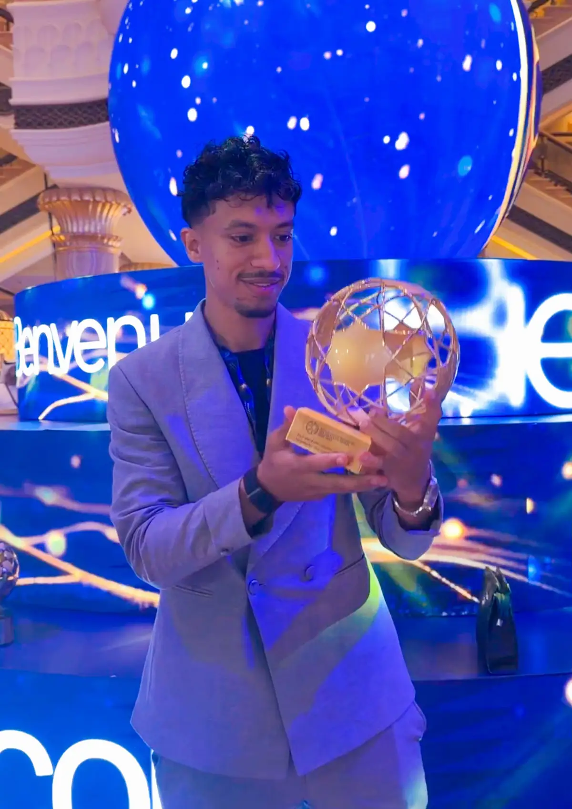

Odey — The Game Is My Language
A footballer driven by passion, built on discipline, and always striving for greatness


about me
Mahmoud Amin footballer, widely known as ODEY, is a ntent creator who has built a strong presence in the world of social media through his passion for football and creative approach to content creation.With a focus on football skills, player techniques, dribbling, and the art of the beautiful game, ODEY shares content that connects with football fans and inspires people who love developing their skills and understanding the game.Through engaging videos and creative football content, he has established his own identity in the digital football community, reaching a growing audience of fans who share the same passion for the sport.For ODEY, football is more than just a game. It is a combination of creativity, dedication, skill, and passion. His journey reflects his commitment to creating entertaining content and bringing football lovers closer to the game they love.This is ODEY — driven by passion, defined by creativity, and connected by football.